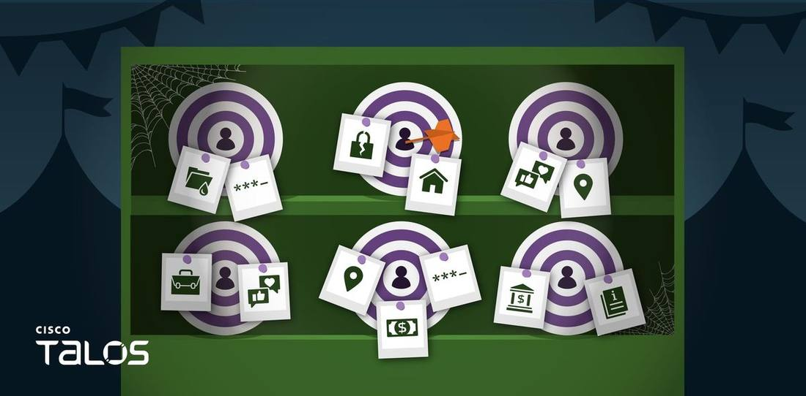
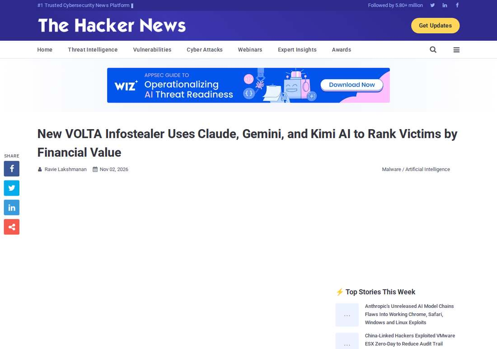

Steal First, Then Let AI Do the Valuation: Talos Discloses VOLTA Malware That Ranks Victims by Monetization Value
Cisco Talos disclosed the VOLTA-AUTODOXER malware on October 31: after stealing browser credentials, payment cards, wallet seed phrases and platform sessions, it enriches victim profiles with the stolen sessions, then calls Claude Opus 4.6 via OpenRouter (falling back to Kimi K2 and Gemini 2.5 Flash on refusal) to rank victims by monetization value, exfiltrating via Telegram; NIK C2, disclosed the same week, steals victims' own OpenAI API keys to run its analysis.

- 01THE DISCLOSURE — Cisco Talos discloses VOLTA-AUTODOXER on October 31; AI ranks victims by monetization value.
- 02THE CONFIRMATION — The Hacker News' independent report confirms the theft scope, the model fallback chain and the three-stage Telegram exfiltration.
- 03THE WATCHPOINT — Whether real VOLTA victim cases and evidence of builder sales emerge, and whether model providers block this class of abusive calls.
WHAT HAPPENEDWhat Happened
In an October 31 disclosure, Cisco Talos said the Windows information stealer calling itself VOLTA-AUTODOXER, after stealing credentials, packages victim data into structured evidence bundles and hands them to a large language model to rank by monetization value. It is a new class of AI-augmented attack tool tracked by Talos' CAIRN research program.
The theft covers Chromium browser passwords and cookies, payment cards, crypto wallet seed phrases, Discord, Telegram, Steam and Roblox sessions, Microsoft OAuth tokens, SSH and cloud-provider keys, Wi-Fi passwords and screenshots, with a built-in wallet vault cracker.
VOLTA also uses stolen sessions for live enrichment: searching Gmail for Amazon, DoorDash, Uber Eats, Grubhub, Walmart and PayPal receipts to confirm home addresses, pulling food-delivery order histories, and valuing Roblox inventories via Rolimons, ultimately assembling a victim profile with geolocation, employer, inferred birth year, the last four digits of card numbers and Slack workspaces.
The AI stage is called through OpenRouter, with Anthropic's Claude Opus 4.6 as the default model, falling back in sequence to Moonshot AI's Kimi K2 and Google's Gemini 2.5 Flash if it refuses; the system prompt runs about 240 words and instructs the model to act as a forensic intelligence analyst, outputting a victim-value ranking tiered high, medium and low by ease of monetization, plus an assessment of security habits.
Data is exfiltrated via Telegram in three stages: after the stealer runs, after the AI analysis, and after network enrichment; six replaceable slots (Telegram channels, API keys and the like) are filled in at compile time, which led Talos to conclude it is a builder sold to buyers rather than a tool for the author's own use, with no attacker-owned infrastructure.
The same week, Talos also disclosed NIK C2, a Go-based Windows remote access tool supporting more than 50 commands with an embedded OpenAI client; if the attacker provides no API key, it scans the victim's environment variables for OPENAI_API_KEY and runs analysis on the victim's own key, a form of LLMjacking in which the bill falls on the victim.
WHY IT MATTERSAI's Position in the Attack Chain Has Changed
The earlier AI-malware narrative was mostly models helping to write phishing copy or generate code. VOLTA puts the model at the end of the attack chain: not helping to steal, but helping to sort. Raw stolen credential logs pass through a model and come out as victim profiles ranked by monetization value, with supporting citations, and the attacker's analytical work is replaced by the model.
Talos' judgment pinpoints the essence: the axis of this round of AI improvement is not speed or scale, but effort displacement, swapping the most attention-hungry link for a single model call. The defensive focus moves with it: defenders must guard not only against theft, but against model calls themselves becoming an exfiltration channel.
WHY IT MATTERSThe Refusal-Fallback Chain Is a New Point of Attack and Defense
VOLTA has explicit engineering for model refusals: when it detects phrasing such as I can't or I cannot, it switches to the next model, from Claude to Kimi to Gemini. Attackers are now designing around model guardrails as a predictable, bypassable link, rather than leaving it to luck.
For defenders, outbound traffic to gateways such as OpenRouter, AI API calls from non-developer machines, and Chrome launched in headless mode by non-developer processes are all signals Talos names as worth alerting on. The moment an API key enters environment variables, it becomes attack surface.
SIGNAL JUDGMENT — ANALYSISThe Sorting Deserves More Alarm Than the Stealing
Tokenta Signal's judgment: the signal in VOLTA is not how much it steals, but that it outsources the sorting to a model. Stealing tools were commoditized long ago; commoditized sorting is the new step. A buyer of any skill level who gets the builder receives pre-ranked victim profiles. Defense checklists must from now on add one item: AI API calls are themselves an exfiltration channel.
WHAT REMAINS UNCERTAINWhat Remains Uncertain
EVIDENCEEvidence

Confirmed by two sources, Cisco Talos' official research report and independent reporting by The Hacker News; both the Talos original and the report page were opened and verified.
PRIMARY SOURCESPrimary Sources
- Cisco Talos official report
https://blog.talosintelligence.com/appraisal-by-ai-model-driven-victim-prioritization-in-the-volta-infostealer/ - The Hacker News independent report
https://thehackernews.com/2026/11/new-volta-infostealer-uses-claude.html